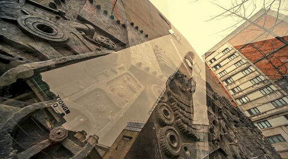

- 关于东郊记忆
-

关于关东记忆
位于成都市成华区建设南支路的 “成都东区音乐公园” 于2012年11月1日起更名为“东郊记忆”。成都东郊记忆旅游景区按城市工业用地更新和工业遗存保护相结合的方式，在成华区原红光电子管厂旧址上修建而成，是工业遗存保护和文化创意产业相结合的新型旅游景区。
- 音乐基地
-

音乐基地
中国数字音乐科技孵化园 中国原创音乐发展基金 中国数字音乐版权认证和交易中心 中国民族音乐体验展演平台
- 展演聚落
-

展演聚落
锦颂东方艺术展览中心-演艺中心-成都舞台三个核心场馆串联成东郊记忆展演聚落中轴线。围绕这条中轴线，园区划分为展演核心聚落、潮流文化场馆、幻变特色空间3类，共计18个特色场馆。这些大小、特点以及风格不一的绝佳场馆形成了成都乃至全国唯一配套齐全的展演聚落。全年超过1200场文化盛宴，让东郊记忆成为了当之无愧的“中国的伦敦西区”。
- 商业园区
-

商业园区
吃、住、行、游、购、娱，一应俱全。 作为成都最有特色的休闲文化旅游胜地，这里不仅可以体验由砖石和齿轮之间幻变出24个风格迥异的果然24房酒店，时尚炫酷的好多苹果主题餐饮，以及模仿80年代工厂餐厅的东郊食堂，将古今中国艺术与工业建筑完美结合的大妙火锅，还囊括了最华丽的玩乐空间，西南最大的IMAX影厅，最古老的唱片店，最文艺的书吧、咖啡馆、音乐酒吧、KTV，同时还可以在梧桐树下的花园餐厅畅享最成都的美食盛宴，在夜色降临后体验独特的冷淡杯。
- 潮玩东郊
-

潮玩东郊
一个充满工业文化遗产记忆的旅游园区 一个艺术资源聚集、多元文化互动体验的旅游园区 一个工业文明与音乐、创意文化结合的综合性旅游园区 来，东郊记忆寻找记忆中的创意工业园